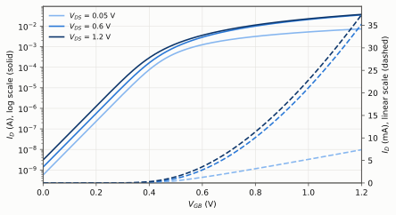
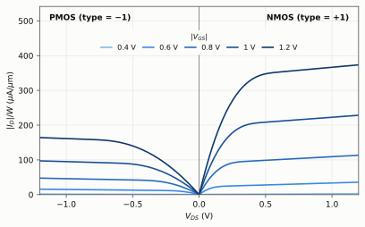
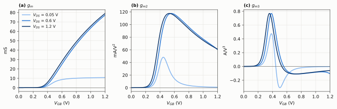
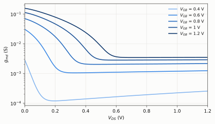
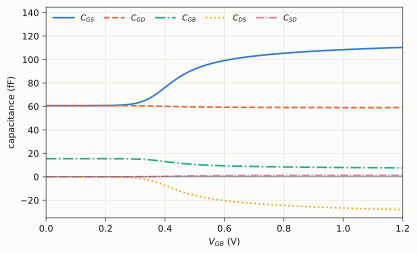
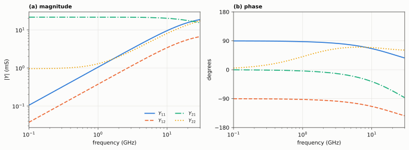
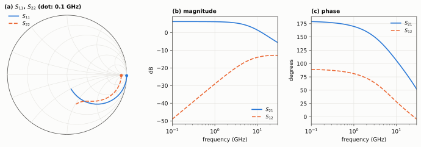
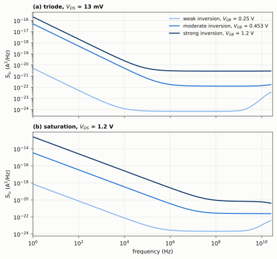

ACM2 2.0.0: model equations and characteristics
Advanced Compact MOSFET model 2 (ACM2), version 2.0.0: source models/acm2.va, module acm2_va. This page gives every equation of the released Verilog-A code, in the order in which the code evaluates them, with its parameters (Sections 1 to 16), and plots of the characteristics of an IHP SG13G2 NMOS device (Section 17). Parameter extraction from your own I-V data: Google Colab notebook.
1. Model overview
ACM2 is a charge-based model: the drain current and the terminal charges are functions of the normalized
inversion charge densities at the source and drain ends of the channel, $q_S$ and $q_D$, obtained from the unified
charge-control model (UCCM). Currents, charges and their derivatives are single-piece expressions, valid from weak
to strong inversion, and the model is symmetric: source and drain are interchangeable. Five DC parameters set the
drain current: $V_{T0}$ (vt0), the sheet specific current $I_{SH}$ (ish), the slope factor $n$ (n), the DIBL
coefficient $\sigma$ (sigma) and the velocity-saturation coefficient $\zeta$ (zeta).
NMOS frame. One module serves both device types. The code multiplies the terminal voltages by type (+1 NMOS,
−1 PMOS), evaluates the NMOS equations, and multiplies the branch currents by type again:
$$V_{GB}=\mathrm{type}\cdot V(g_i,b),\quad V_{DB}=\mathrm{type}\cdot V(d,b),\quad V_{SB}=\mathrm{type}\cdot V(s,b),\quad V_{DS}=\mathrm{type}\cdot V(d,s),$$
$$V_{GD}=V_{GB}-V_{DB},\qquad V_{GS}=V_{GB}-V_{SB}.$$
Equivalent circuit. Terminals $d$, $g$, $s$, $b$; $g_i$ is the internal gate node, present when rg > 0. The
branch contributions of the code are:
| Branch | Contribution | Section |
|---|---|---|
| $d\rightarrow s$ | $\mathrm{type}\cdot I_D$, thermal and flicker noise | 8, 13 |
| $g_i\rightarrow b$ | $\mathrm{type}\cdot dQ_G/dt$ | 10 |
| $d\rightarrow b$, $s\rightarrow b$ | $\mathrm{type}\cdot dQ_D/dt+g_{min}V(d,b)$, $\;\mathrm{type}\cdot dQ_S/dt+g_{min}V(s,b)$ | 10, 14 |
| $g_i\rightarrow d$, $g_i\rightarrow s$ | $\mathrm{type}\cdot dq_{ovd}/dt$, $\;\mathrm{type}\cdot dq_{ovs}/dt$ (overlap) | 12 |
| $d\rightarrow b$, $s\rightarrow b$ | $\mathrm{type}\cdot dq_{jd}/dt$, $\;\mathrm{type}\cdot dq_{js}/dt$ (junctions) | 12 |
| $g\rightarrow g_i$ | $V(g,g_i)\,m/r_g$ and its thermal noise; $V(g,g_i)=0$ if $r_g=0$ | 14 |
The intrinsic charges satisfy $Q_G+Q_B+Q_D+Q_S=0$: the model conserves charge.
2. Parameters
Instance parameters (device line)
| Name | Default | Range | Units | Description |
|---|---|---|---|---|
w |
1e-6 | (0:inf) | m | Channel width |
l |
1e-6 | (0:inf) | m | Channel length |
ad |
2e-12 | [0:inf) | m^2 | Drain diffusion area |
as |
2e-12 | [0:inf) | m^2 | Source diffusion area |
pd |
10e-6 | [0:inf) | m | Drain diffusion perimeter |
ps |
10e-6 | [0:inf) | m | Source diffusion perimeter |
m |
1 | [1:inf) | Number of transistors in parallel | |
avt0 |
0.0 | (-inf:inf) | V*m | vt0 mismatch coefficient |
ak |
0.0 | [0:inf) | m | IS mismatch coefficient |
dtemp |
0.0 | (-inf:inf) | K | Device temperature offset |
rg |
10 | [0:inf) | Ohm | Gate resistance per device (divided by m); 0 removes the gate node |
Model parameters (.model line). Last column: value in the IHP SG13G2 NMOS card of the plots (Section 17).
| Name | Default | Range | Units | Description | Card |
|---|---|---|---|---|---|
type |
1 | [-1:1] exclude 0 | Device type: +1=NMOS, -1=PMOS | 1 | |
vt0 |
0.5 | [0:inf) | V | Threshold voltage | 0.452985 |
ish |
5e-6 | (0:inf) | A | Sheet specific current I_SH: specific current of one device = ish*w/l | 1.4208e-07 |
dlc |
0.0 | [0:inf) | m | Charge-length offset: lc = l - dlc in charges, capacitances, mobility and noise | 8.46251e-08 |
n |
1.3 | [1:3] | Slope factor | 1.28415 | |
sigma |
0.03 | [0:inf) | Sigma | 0.0440683 | |
zeta |
0.05 | [0:inf) | Zeta (0: no velocity saturation) | 0.0256189 | |
cj0 |
4e-3 | [0:inf) | F/m^2 | Zero-bias bottom junction cap | 0.00100234 |
cj0sw |
4e-3 | [0:inf) | F/m^2 | Zero-bias side-wall junction cap | 0.000181234 |
xd_mj |
0.5 | [0:inf) | Bottom junction grading coeff | 0.305356 | |
xd_mjsw |
0.5 | [0:inf) | Side-wall junction grading coeff | 0.311934 | |
phi_zero |
0.6 | (0:inf) | V | Bottom junction built-in potential | 0.624368 |
phi_zerosw |
0.6 | (0:inf) | V | Side-wall junction built-in potential | 0.882287 |
xj |
150e-9 | [0:inf) | m | Junction depth | 1.5e-07 |
ld |
30e-9 | [0:inf) | m | Gate overlap length | 3.93648e-08 |
tox |
4e-9 | (0:inf) | m | Oxide thickness | 2.2404e-09 |
epsrox |
3.97 | (0:inf) | Oxide relative permittivity | 3.9 | |
tref |
300.15 | (0:inf) | K | Parameter reference temperature | 300.15 |
alphavt0 |
-0.4e-3 | [-1:1] | V/K | vt0 temperature coefficient | |
alphais |
1.5 | [0:inf) | IS temperature coefficient | ||
alphasigma |
0.3e-6 | [0:inf) | Sigma temperature coefficient | ||
alphazeta |
0.2e-3 | [0:inf) | Zeta temperature coefficient | ||
n_ot |
1e12 | [0:inf) | m^-2 | Equivalent oxide trap density |
Alias: trise = dtemp.
The card is acm2n_L0p13 (cards/ihp_sg13g2/acm2_nmos_perL.lib, extracted at W = 10 µm, L = 0.13 µm). Parameters that a card does not set keep the defaults above
(temperature, flicker-noise and mismatch parameters are not extracted).
3. Constants, geometry and thermal voltage
$$\varepsilon_{ox}=\mathrm{epsrox}\cdot\varepsilon_0,\qquad C_{ox}=\frac{\varepsilon_{ox}}{t_{ox}},\qquad W_e=m\,w,\qquad l_c=l-\mathrm{dlc}\;\;(\mathrm{dlc}<l),$$
$$T=T_{sim}+\mathrm{dtemp},\qquad \phi_t=\frac{kT}{q}.$$
$W_e$ is the total width of the $m$ parallel devices. The charge length $l_c$ replaces $l$ in the charges,
capacitances, mobility and noise; the drawn length $l$ sets the specific current and the mismatch. $T_{sim}$ is
the simulator temperature ($temperature). The drain current uses the smoothing constant $\epsilon=0.1$
(Section 8).
4. Specific current, temperature and mismatch
The specific current of one device scales with its drawn geometry through the sheet specific current
$I_{SH}$ (ish): one card covers every width at its length.
$$I_S=I_{SH}\,\frac{w}{l}.$$
With $\Delta T=T-T_{ref}$ and the area $A=W_e\,l$ of the $m$ devices:
$$V_{T0}(T)=V_{T0}+\alpha_{VT0}\,\Delta T+\frac{A_{VT0}}{\sqrt{A}},\qquad I_S(T)=I_S\left(1+\frac{2-\alpha_{IS}}{T}\,\Delta T\right)+\frac{I_S\,A_K}{\sqrt{A}},$$
$$\sigma(T)=\sigma+\alpha_\sigma\,\Delta T,\qquad \zeta(T)=\max\left(\zeta+\alpha_\zeta\,\Delta T,\;0\right).$$
$\alpha_{VT0}$, $\alpha_{IS}$, $\alpha_\sigma$, $\alpha_\zeta$ are alphavt0, alphais, alphasigma,
alphazeta. The instance parameters $A_{VT0}$ (avt0) and $A_K$ (ak) shift $V_{T0}$ and $I_S$ by amounts that
scale with $1/\sqrt{\mathrm{area}}$ (Section 16). $\zeta(T)=0$ removes velocity saturation. From here on, $\sigma$
and $\zeta$ stand for $\sigma(T)$ and $\zeta(T)$.
5. Mobility and saturation velocity
The mobility follows from the specific current, $I_S=\mu\,n\,C_{ox}\,\phi_t^2\,w/(2\,l_c)$, written with the width $w$ of one device, so that it does not depend on $m$:
$$\mu=\frac{I_S(T)\;l_c}{C_{ox}\,n\,\phi_t^2\;w/2}.$$
The velocity-saturation coefficient is $\zeta=\mu\,\phi_t/(l_c\,v_{sat})$; the charges (Section 10) use the transit-time term
$$\frac{l_c}{v_{sat}}=\frac{l_c^2\,\zeta(T)}{\mu\,\phi_t},$$
which is zero when $\zeta(T)=0$.
6. Terminal voltages and pinch-off voltage
The type-scaled voltages of Section 1 enter the pinch-off voltage, where $\sigma$ adds the drain-induced barrier lowering (DIBL) through the drain and source potentials:
$$V_P=\frac{V_{GB}-V_{T0}(T)+\sigma\,(V_{DB}+V_{SB})}{n}.$$
With $V_S=V_B=0$, $V_P=(V_{GB}-V_{T0}+\sigma V_{DS})/n$: a higher drain voltage raises $V_P$ as a lower threshold voltage would.
7. Normalized charge densities
The normalized inversion charge density is $q=Q_I'/(-n\,C_{ox}\,\phi_t)$, where $Q_I'$ is the inversion charge per unit area. At the source end, the UCCM
$$\frac{V_P-V_{SB}}{\phi_t}=q_S-1+\ln q_S$$
is solved with the Lambert function $W$, the solution of $w\,e^{w}=z$:
$$q_S=W\!\left[\exp\left(\frac{V_P-V_{SB}}{\phi_t}+1\right)\right].$$
Algorithm 443 [5] evaluates $W(z)$ with a rational first estimate $w_0$ and one correction:
$$w_0=\begin{cases}\dfrac{z+\frac{4}{3}z^2}{1+\frac{7}{3}z+\frac{5}{6}z^2}, & z<0.7385,\\[2ex] \ln z-24\,\dfrac{\ln^2 z+2\ln z-3}{7\ln^2 z+58\ln z+127}, & z\ge 0.7385,\end{cases}$$
$$z_n=\ln z-w_0-\ln w_0,\qquad W(z)\simeq w_0\left[1+\frac{z_n}{1+w_0}\cdot\frac{2(1+w_0)\left(1+w_0+\frac{2}{3}z_n\right)-z_n}{2(1+w_0)\left(1+w_0+\frac{2}{3}z_n\right)-2z_n}\right].$$
Saturation charge. Velocity saturation limits the drain-end charge to $q_{sat}=q_S+1+\frac{1}{\zeta}-\sqrt{\left(1+\frac{1}{\zeta}\right)^2+\frac{2q_S}{\zeta}}$. The code evaluates the equivalent form without cancellation, which also holds for $\zeta=0$ ($q_{sat}=0$):
$$q_{sat}=q_S-\frac{2\,q_S}{1+\zeta+\sqrt{(1+\zeta)^2+2\,\zeta\,q_S}}.$$
Drain charge. The UCCM written between source and drain, with both charges measured from $q_{sat}$,
$$\frac{V_{DS}}{\phi_t}=(q_S-q_D)+\ln\frac{q_S-q_{sat}}{q_D-q_{sat}},$$
gives
$$q_D=q_{sat}+W\!\left[(q_S-q_{sat})\exp\left(q_S-q_{sat}-\frac{V_{DS}}{\phi_t}\right)\right].$$
At $V_{DS}=0$, $q_D=q_S$; in saturation ($V_{DS}\gg\phi_t$), $q_D\rightarrow q_{sat}$.
8. Drain current
$$I_D=m\,\frac{I_S(T)\,(q_S+q_D+2)\,(q_S-q_D)}{1+\sqrt{\zeta^2\,(q_S-q_D)^2+\epsilon^2}},\qquad \epsilon=0.1.$$
The denominator is the velocity-saturation term $1+\zeta\,|q_S-q_D|$ with $|x|$ replaced by $\sqrt{x^2+\epsilon^2}$,
so that it stays differentiable at $V_{DS}=0$, where it equals $1+\epsilon$. The extraction notebook
(colab/ACM2_Parameter_Extraction.ipynb) uses the same expression, so ish is extracted with this factor.
The drain-to-source branch carries $\mathrm{type}\cdot I_D$; the drain terminal current also contains $g_{min}V(d,b)$ (Section 14).
9. Transconductances (operating-point outputs)
The simulator differentiates $I_D$ exactly. For the operating-point outputs gm_op, gms_op and gmd_op (of the
$m$ devices), the code evaluates analytical expressions, with the normalized virtual-charge shift (also used by the
charges, Section 10)
$$q_{idsat}=\frac{I_D}{W_e\,v_{sat}\,n\,C_{ox}\,\phi_t}=\frac{\zeta\,I_D}{2\,m\,I_S(T)},$$
$$\begin{aligned}g_{ms}=\frac{2\,m\,I_S(T)}{\phi_t\left[1+\zeta(q_S-q_D)\right]^2}\Bigg\{&\left[1+q_S+\frac{\zeta}{2}(q_S-q_D)^2\right]\left(1-\frac{\sigma}{n}\right)\frac{q_S-q_{idsat}}{1+q_S-q_{idsat}}\\&+\left[1+q_D-\frac{\zeta}{2}(q_S-q_D)^2\right]\frac{\sigma}{n}\,\frac{q_D-q_{idsat}}{1+q_D-q_{idsat}}\Bigg\},\end{aligned}$$
$$\begin{aligned}g_{md}=\frac{2\,m\,I_S(T)}{\phi_t\left[1+\zeta(q_S-q_D)\right]^2}\Bigg\{&\left[1+q_S+\frac{\zeta}{2}(q_S-q_D)^2\right]\frac{\sigma}{n}\,\frac{q_S-q_{idsat}}{1+q_S-q_{idsat}}\\&+\left[1+q_D-\frac{\zeta}{2}(q_S-q_D)^2\right]\left(1-\frac{\sigma}{n}\right)\frac{q_D-q_{idsat}}{1+q_D-q_{idsat}}\Bigg\},\end{aligned}$$
$$\begin{aligned}g_m=\frac{2\,m\,I_S(T)}{n\,\phi_t\left[1+\zeta(q_S-q_D)\right]^2}\Bigg\{&\left[1+q_S+\frac{\zeta}{2}(q_S-q_D)^2\right]\frac{q_S-q_{idsat}}{1+q_S-q_{idsat}}\\&-\left[1+q_D-\frac{\zeta}{2}(q_S-q_D)^2\right]\frac{q_D-q_{idsat}}{1+q_D-q_{idsat}}\Bigg\}.\end{aligned}$$
These outputs are analytical estimates; the small-signal plots of Section 17 are numerical derivatives of $I_D$.
10. Charges
With the linearity factor
$$\alpha=\frac{1+q_D-q_{idsat}}{1+q_S-q_{idsat}},$$
the total inversion, bulk and gate charges of the $m$ devices are
$$Q_I=-n\,\phi_t\,C_{ox}W_el_c\left[\frac{2}{3}\cdot\frac{1+\alpha+\alpha^2}{1+\alpha}\,(q_S+1-q_{idsat})-1\right]-\frac{l_c}{v_{sat}}\,I_D,$$
$$Q_B=-\frac{n-1}{n}\left[Q_I+C_{ox}W_el_c\left(V_{GB}-V_{T0}(T)\right)\right],\qquad Q_G=-Q_B-Q_I.$$
The second term of $Q_B$ is the bulk reference charge for a constant slope factor; $V_{T0}(T)$ fixes the charge origin at a given temperature. The charges are therefore referred to their values at $V_{GB}=V_{T0}(T)$ (hence $Q_G<0$ and $Q_B>0$ below threshold); only their time derivatives enter the simulation (Section 1). The inversion charge is split between drain and source with the Ward–Dutton partition [7]:
$$Q_D=-n\,\phi_t\,C_{ox}W_el_c\left[\frac{2}{15}\,(q_S+1-q_{idsat})\,\frac{2+4\alpha+6\alpha^2+3\alpha^3}{(1+\alpha)^2}-\frac{1}{2}\right]-\frac{1}{2}\cdot\frac{l_c}{v_{sat}}\,I_D,\qquad Q_S=Q_I-Q_D.$$
The charge densities at the channel ends, used by the flicker noise, are $Q_{IS}'=-n\,C_{ox}\,\phi_t\,q_S$ and $Q_{ID}'=-n\,C_{ox}\,\phi_t\,q_D$.
11. Capacitances
Exact capacitances. The simulator stamps the time derivatives of the charges of Sections 10 and 12, so the small-signal capacitances are the exact derivatives $C_{xy}=-\partial Q_x/\partial V_y$ ($x\neq y$). $C_{dg}\neq C_{gd}$: the capacitances of a charge-based model are nonreciprocal.
Operating-point estimates. For the outputs Cgs_op … Cm_op the code evaluates analytical expressions:
$$C_{gso}=\frac{2}{3}W_el_cC_{ox}\,\frac{(1+2\alpha)(q_S-q_{idsat})}{(1+\alpha)^2(1+q_S-q_{idsat})},\qquad C_{gdo}=\frac{2}{3}W_el_cC_{ox}\,\frac{(\alpha^2+2\alpha)(q_D-q_{idsat})}{(1+\alpha)^2(1+q_D-q_{idsat})},$$
$$C_{dso}=-\frac{4}{15}\,n\,W_el_cC_{ox}\,\frac{(1+3\alpha+\alpha^2)(q_S-q_{idsat})}{(1+\alpha)^3(1+q_S-q_{idsat})},\qquad C_{sdo}=-\frac{4}{15}\,n\,W_el_cC_{ox}\,\frac{(\alpha+3\alpha^2+\alpha^3)(q_D-q_{idsat})}{(1+\alpha)^3(1+q_D-q_{idsat})},$$
$$C_{gs}=C_{gso}\left(1-\frac{\sigma}{n}\right)-C_{gdo}\frac{\sigma}{n}+\frac{l_c}{v_{sat}}\,\frac{g_{ms}}{3n}\,\frac{(1-\alpha)^2}{(1+\alpha)^2},$$
$$C_{gd}=C_{gdo}\left(1-\frac{\sigma}{n}\right)-C_{gso}\frac{\sigma}{n}-\frac{l_c}{v_{sat}}\,\frac{g_{md}}{3n}\,\frac{(1-\alpha)^2}{(1+\alpha)^2},$$
$$C_{gb}=\frac{n-1}{n}\left(W_el_cC_{ox}-C_{gs}-C_{gd}\right),\qquad C_{bs}=(n-1)\,C_{gs},\qquad C_{bd}=(n-1)\,C_{gd},$$
$$C_{ds}=C_{dso}\left(1-\frac{\sigma}{n}\right)-\frac{l_c}{v_{sat}}\,\frac{g_{ms}}{30}\,\frac{(3\alpha+7)(1-\alpha)^2}{(1+\alpha)^3},$$
$$C_{sd}=C_{sdo}\left(1-\frac{\sigma}{n}\right)+\frac{l_c}{v_{sat}}\,\frac{g_{md}}{30}\,\frac{(3+7\alpha)(1-\alpha)^2}{(1+\alpha)^3},\qquad C_m=\frac{C_{sd}-C_{ds}}{n}.$$
These are analytical estimates; the capacitances of Section 17 are the exact derivatives of the charges, obtained from transient currents.
12. Overlap and junctions
Overlap. $C_{gs,ov}=C_{gd,ov}=C_{ox}\,W_e\,l_d$ ($l_d$ = ld), with the charges $q_{ovs}=C_{gs,ov}V_{GS}$ and
$q_{ovd}=C_{gd,ov}V_{GD}$.
Junctions. Each drain and source has a bottom junction (area ad, as) and a side-wall junction (perimeter
pd, ps, depth xj), per device; the $m$ devices add their junctions. With $V=V_{DB}$ (drain) or $V_{SB}$
(source), reverse biased for $V>0$:
$$C_j(V)=\begin{cases}C_0\left(1+\dfrac{V}{\phi_0}\right)^{-m_j}, & V>0,\\[1.5ex] C_0\left(1-m_j\,\dfrac{V}{\phi_0}\right), & V\le 0,\end{cases}$$
with $C_0=\mathrm{cj0}\cdot\mathrm{ad}$, $\phi_0=$ phi_zero, $m_j=$ xd_mj for the bottom junction and
$C_0=\mathrm{cj0sw}\cdot\mathrm{xj}\cdot\mathrm{pd}$, $\phi_0=$ phi_zerosw, $m_j=$ xd_mjsw for the side wall
(as, ps for the source). The charges are the integrals of $C_j$ from 0 to $V$, so that $dQ/dV=C_j(V)$ on both
sides of $V=0$:
$$q_{dep}(V)=\begin{cases}\dfrac{C_0\,\phi_0}{1-m_j}\left[\left(1+\dfrac{V}{\phi_0}\right)^{1-m_j}-1\right], & V>0\quad\left(C_0\,\phi_0\ln\left(1+\dfrac{V}{\phi_0}\right)\ \text{if}\ |1-m_j|<10^{-6}\right),\\[2ex] C_0\left(V-\dfrac{m_j\,V^2}{2\,\phi_0}\right), & V\le 0,\end{cases}$$
$$q_{jd}=m\left[q_{dep}^{bottom}(V_{DB})+q_{dep}^{side}(V_{DB})\right],\qquad q_{js}=m\left[q_{dep}^{bottom}(V_{SB})+q_{dep}^{side}(V_{SB})\right].$$
Cjdb_op and Cjsb_op are $m\,(C_j^{bottom}+C_j^{side})$: exact derivatives of these charges.
Terminal charges. With overlap and junctions, the charges at the four terminals are $Q_g=Q_G+q_{ovd}+q_{ovs}$,
$Q_d=Q_D-q_{ovd}+q_{jd}$, $Q_s=Q_S-q_{ovs}+q_{js}$ and $Q_b=Q_B-q_{jd}-q_{js}$ in the NMOS frame (times type for
the physical charges).
13. Noise
Drain-current noise from drain to source, power spectral densities in A²/Hz:
$$S_{th}=-\frac{4kT\,\mu\,Q_I}{l_c^2},\qquad S_{fl}(f)=\frac{q^2\,N_{ot}\,\mu}{l_c^2\,n\,C_{ox}}\,\ln\left(\frac{nC_{ox}\phi_t-Q_{IS}'}{nC_{ox}\phi_t-Q_{ID}'}\right)\frac{I_D}{f}=\frac{q^2\,N_{ot}\,\mu}{l_c^2\,n\,C_{ox}}\,\ln\left(\frac{1+q_S}{1+q_D}\right)\frac{I_D}{f}.$$
$Q_I<0$ is the total inversion charge of Section 10, so $S_{th}\ge 0$. The logarithm and $I_D$ have the sign of
$q_S-q_D$, so $S_{fl}\ge 0$ in both directions and zero at $V_{DS}=0$. $N_{ot}$ (n_ot) is the equivalent
oxide-trap density of the flicker-noise model [6]; the IHP cards keep its default. The gate resistance adds the
thermal noise $4kT\,m/r_g$ of the gate branch (Section 14). Here $k$ and $q$ are P_K and P_Q.
14. Gate resistance and $g_{min}$
rg is the gate resistance of one device; the $m$ parallel gates give $r_g/m$: $I(g,g_i)=V(g,g_i)\,m/r_g$, with the
thermal noise $4kT\,m/r_g$. rg = 0 connects $g$ to $g_i$ directly (no internal node). The IHP cards set
rg = 0: give the gate resistance of each device on its instance line.
The simulator conductance $g_{min}$ ($simparam("gmin"), ngspice option gmin) is connected from drain and source
to bulk: $g_{min}V(d,b)$ and $g_{min}V(s,b)$, with the physical voltages.
15. Temperature
Section 4 gives the temperature laws. The IHP cards do not extract the coefficients alphavt0, alphais, alphasigma and alphazeta: they keep the defaults of Section 2.
16. Mismatch
avt0 (V·m) and ak (m) shift $V_{T0}$ and $I_S$ of one instance by $A_{VT0}/\sqrt{W_el}$ and $I_S\,A_K/\sqrt{W_el}$
(Section 4); for a mismatch analysis, assign them per instance (avt0 may be negative, ak ≥ 0).
17. Characteristics
The figures are computed with ngspice 47 from models/acm2.va compiled by OpenVAF-Reloaded, with the
IHP SG13G2 NMOS card acm2n_L0p13 (cards/ihp_sg13g2/acm2_nmos_perL.lib): W = 100 µm, L = 0.13 µm,
ad = as = 20 µm², pd = ps = 100 µm, 27 °C, and $V_S=V_B=0$ unless
a terminal is swept; Fig. 2 also uses the PMOS card of the same length. The derivatives are numerical: seven-point centered differences with a 1-mV step.
DC


acm2n_L0p13 (type = +1, $V_{DS}>0$) and the PMOS card acm2p_L0p13 (type = −1, $V_{DS}<0$), W = 100 µm, L = 0.13 µm, $V_S=V_B=0$: magnitude of the drain current per µm of width for $|V_{GS}|$ = 0.4, 0.6, 0.8, 1, 1.2 V. Type check: the NMOS card with type = −1 and every voltage negated gives exactly the negated terminal currents (169 bias points) and the same capacitances. Data (CSV)Small signal


Capacitances

dlc). (a) Intrinsic capacitances $C_{xy}=-\partial Q_x/\partial V_y$ (device without overlap and junctions) versus gate voltage, from accumulation to strong inversion, at $V_{DS}$ = 0.6 V, from transient currents: terminal $y$ is ramped by ±1 mV around its bias in 1 ns, once up and once down; at mid-ramp both runs have the same conduction currents, so half the difference of the currents into terminal $x$ is the displacement current $dQ_x/dt=-C_{xy}\,dV_y/dt$. ACM2 has a constant slope factor and no accumulation model: below threshold, $C_{GB}$ stays at $(n-1)/n\cdot C_{ox}Wl_c$ = 0.221$\,C_{ox}Wl_c$. (b) Extrinsic capacitances, which add to the intrinsic ones: the overlap capacitance $C_{ox}Wl_d$ = 60.7 fF of the gate–source and gate–drain branches, independent of bias, and the drain and source junction capacitances (same layout: ad = as = 20 µm², pd = ps = 100 µm) versus their reverse voltage, with the bottom and side-wall parts (Section 14). At this bias, the drain junction is at 0.6 V and the source junction at 0 V. $r_g=0$. Data (b) (CSV) Data (CSV)RF


Noise

References
[1] D. G. Alves Neto, M. K. Bouchoucha, G. Maranhão, M. J. Barragan, M. C. Schneider, A. Cathelin, S. Bourdel, and C. Galup-Montoro, "Design-oriented single-piece 5-DC-parameter MOSFET model," IEEE Access, vol. 12, pp. 87420–87437, 2024, doi: 10.1109/ACCESS.2024.3417316.
[2] A. I. A. Cunha, M. C. Schneider, and C. Galup-Montoro, "An MOS transistor model for analog circuit design," IEEE J. Solid-State Circuits, vol. 33, no. 10, pp. 1510–1519, Oct. 1998.
[3] O. da Costa Gouveia-Filho, A. I. A. Cunha, M. C. Schneider, and C. Galup-Montoro, "Advanced compact model for short-channel MOS transistors," in Proc. IEEE Custom Integrated Circuits Conf., 2000.
[4] M. C. Schneider and C. Galup-Montoro, CMOS Analog Design Using All-Region MOSFET Modeling. Cambridge, U.K.: Cambridge Univ. Press, 2010, doi: 10.1017/CBO9780511803840.
[5] F. N. Fritsch, R. E. Shafer, and W. P. Crowley, "Algorithm 443: Solution of the transcendental equation $we^w=x$," Commun. ACM, vol. 16, no. 2, pp. 123–124, Feb. 1973, doi: 10.1145/361952.361970.
[6] A. Arnaud and C. Galup-Montoro, "A compact model for flicker noise in MOS transistors for analog circuit design," IEEE Trans. Electron Devices, vol. 50, no. 8, pp. 1815–1818, Aug. 2003, doi: 10.1109/TED.2003.815143.
[7] S.-Y. Oh, D. E. Ward, and R. W. Dutton, "Transient analysis of MOS transistors," IEEE Trans. Electron Devices, vol. 27, no. 8, pp. 1571–1578, Aug. 1980, doi: 10.1109/T-ED.1980.20072.